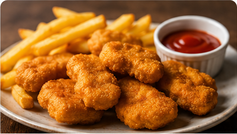
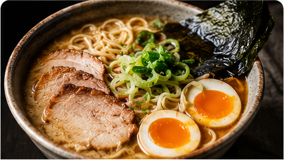

Travel
What Traveling Greece For 2 Weeks Taught Me About Life
Jun 21, 2021 · 11 min read
Hidden coves, ancient ruins, and meals that redefine what food means.
Jun 21, 2021 · 11 min read
Hidden coves, ancient ruins, and meals that redefine what food means.

The math, the science, and the dark truth behind combo meal pricing.

Twelve hours of simmering and a tare that will ruin all other broths for you.

Down unmarked alleys — the izakayas that locals keep to themselves.

From banh mi carts at 6am to midnight pho in Hanoi.

Blind taste tests, industry fraud, and what the label is actually telling you.